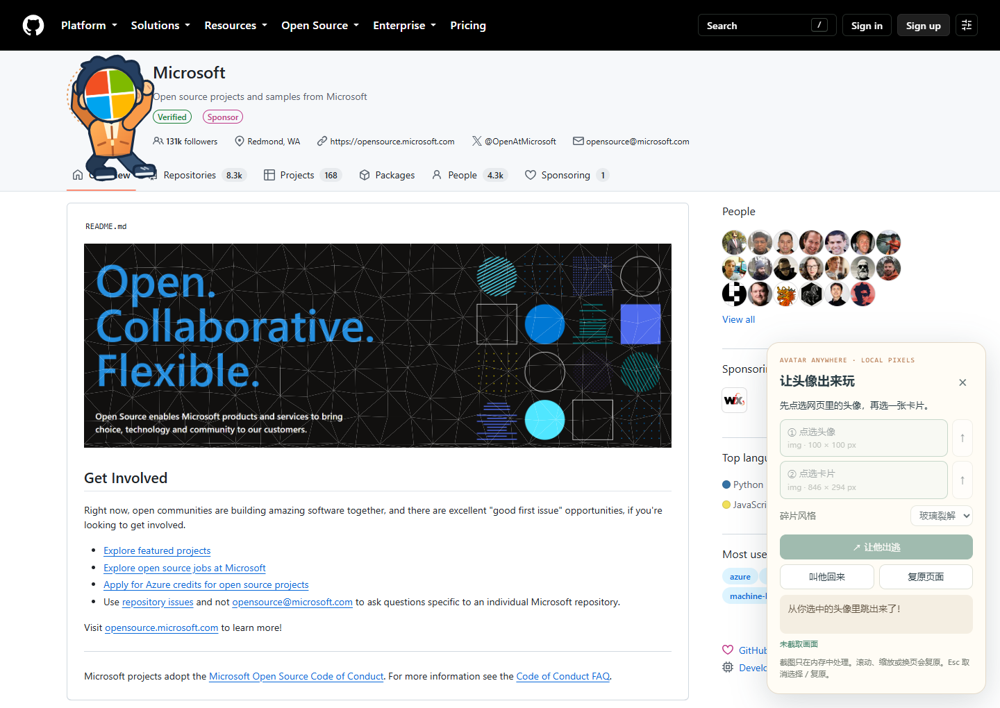
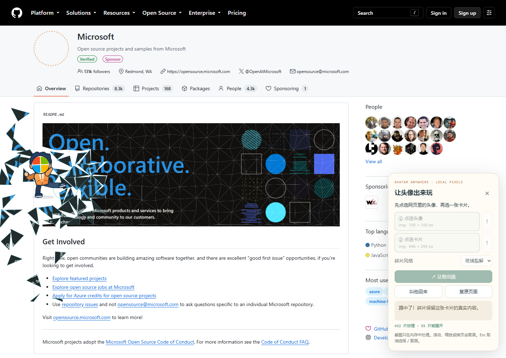
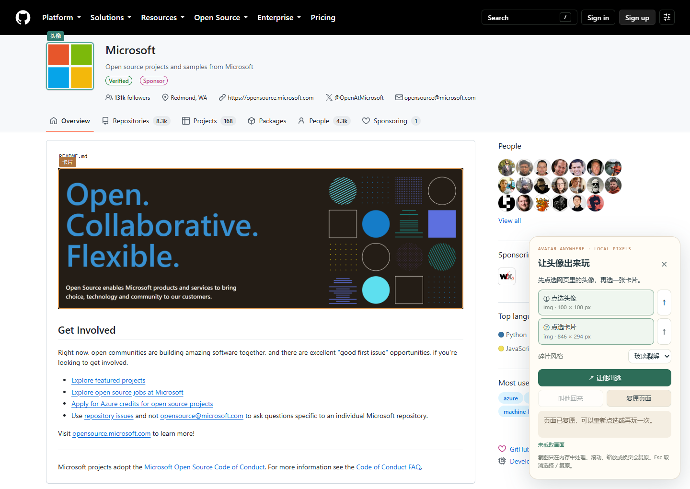

在周末，重新发现
一条熟悉的街。
把手机放进口袋，走得比平常慢一点。面包店门口的铃声、骑车人的影子，还有路边刚落下的一片叶子，原来一直都在。
这次没做什么特别的事，只是认真看了看。这已经是一个不错的下午。
A LITTLE MISCHIEF, ANYWHERE.
不需要网站提前接入。选一个头像，再选一张卡片，让角色出逃、踢碎它，最后恢复原来的网页。
Chrome / Edge · 本地安装 · 图片与截图在本机处理
头像不是只待在
圆框里的。
TRY IT HERE FIRST
把手机放进口袋，走得比平常慢一点。面包店门口的铃声、骑车人的影子，还有路边刚落下的一片叶子，原来一直都在。
这次没做什么特别的事，只是认真看了看。这已经是一个不错的下午。
TAKE IT TO ANOTHER PAGE
解压扩展 ZIP，找到里面的 avatar-extension 文件夹。保留整个文件夹。
打开 chrome://extensions 或 edge://extensions，开启「开发者模式」，选择「加载已解压的扩展程序」，选中 avatar-extension 文件夹。
进入普通 HTTP / HTTPS 网页，在工具栏点击「头像出逃」。浏览器设置页、扩展商店等受保护页面不能使用。
也可尝试快捷键 Alt + Shift + A。若未生效，到 chrome://extensions/shortcuts 或 edge://extensions/shortcuts 手动设置。
点击面板里的选择按钮，在网页上点选一个头像，再点选要捣乱的卡片。让它们完整地出现在当前窗口中。
点击「让他出逃」，看角色跑到目标并踢碎卡片。点击「恢复」还原网页；滚动、缩放或调整窗口大小，也会自动恢复。
THREE PLACES TO START
ON A REAL PUBLIC WEB PAGE

选择的头像像素成为角色头部。

目标网页内容交给物理碎裂引擎。

结束效果后继续浏览原页面。
记录由无界面浏览器自动测试生成；测试使用临时扩展副本授予截图权限。下载包仅申请 activeTab 与 scripting，由用户点击扩展图标后运行。
WHAT THIS DOES, AND HOW
扩展截取你选择的头像像素，作为角色的圆形头部，配上预设身体和动作；碎裂由本地效果引擎处理。它没有从照片生成完整人物，也没有自动建立骨骼。
演示只使用当前视口。截图保存在运行时内存，不上传到远端；恢复或关闭后清理。滚动、缩放和窗口尺寸变化会结束当前效果，保留正常页面使用。
适用于允许扩展注入的普通网页。原生应用不在范围内。网站可能有特殊布局或浏览器限制，选择较小、完整可见的区域更容易观察效果。